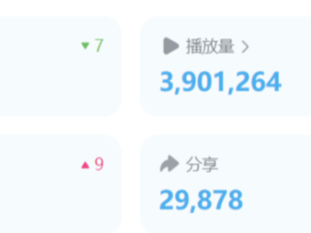

兴趣爱好

设计 Design
摄影 Photography

2019.9~2021.6 南大新传编辑部 运营部部长
2020.9~2021.9 南京大学宣传部新闻中心 采编部成员
2022.1~至今 新华社江苏分社音视频部 实习记者
着快速城镇化和人口大流动，加上我国长期实行的独生子女政策，随迁老人越来越引起关注。我们选取人际交往和社区活动两个自变量，以家庭氛围为控制变量，通过量化方式研究随迁老人社会融入程度受到哪些因素怎样的影响。
在新疆棉事件的背景下，基于批判性话语分析的语言理论和分析策略，本文考察了CNN关于新疆棉事件的七篇报道，试图CNN是如何通过各种话语策略再现新疆、建构中国。
使用量化的方法，通过研究新闻信息的消极程度、相关性、结果可控性等因素，分析负面新闻信息对受众的倦怠、抑郁、过载、社会支持、生活满意度等方面的影响，试图探究后疫情时代，正负面新闻共存的媒介环境对网民影响。

Built with Mobirise
Web Page Builder